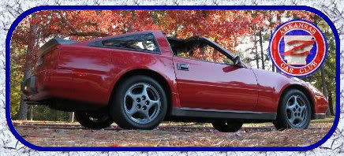

-
Hi from the greatest state in all the free world, New Jersey. My name is Andrew new to the forum and new to my 1986 z turbo. its still a little rough but i working out the kinks as they arise. i am considering the idea of a manual boost controller. and im aware that i can go to home depot and make my own but my first ? is: are those any good or am i better off just spending a few more dollars and getting a premade one? second as i've been reading i see that i will need a boost gauge, i personally dont care to know what direction im going so can i replace the digital compass in the middle of the dash? or is it easier with pod or some other way? last is it hard to install the controller? i've already changed the engine/trans oil, changed the spark plugs, replaced the hood struts, changed the belts, changed the spark plugs and somehow i still cant seem to actually find the turbo!!!!
1986 300zx turbo
1999 Buick Park Ave Ultra *Ported supercharger, smaller pulley, intake, 3"exhaust manifolds (my fast grocery-getter) -
Re: Newbie's 1st post!, boost gauge and boost controller ?'s
sell me your car. -
Re: Newbie's 1st post!, boost gauge and boost controller ?'s
Pod is easier.
Yes, I think it will be hard for you to install a boost controller, and also a gauge.
Turbo is attached to the driver side manifold.
Also, sell your car.
-
Re: Newbie's 1st post!, boost gauge and boost controller ?'s
Welcome. Nice car. I think a ball and spring mbc made from hardware store parts is going to be just as good as any other if you do it right. You could even make it better. Installing a gauge in a pod is going to be easier than installing it in the dash. There are a few write-ups on installing an mbc on a z31.nutball wrote: Hi from the greatest state in all the free world, New Jersey. My name is Andrew new to the forum and new to my 1986 z turbo. its still a little rough but i working out the kinks as they arise. i am considering the idea of a manual boost controller. and im aware that i can go to home depot and make my own but my first ? is: are those any good or am i better off just spending a few more dollars and getting a premade one? second as i've been reading i see that i will need a boost gauge, i personally dont care to know what direction im going so can i replace the digital compass in the middle of the dash? or is it easier with pod or some other way? last is it hard to install the controller? i've already changed the engine/trans oil, changed the spark plugs, replaced the hood struts, changed the belts, changed the spark plugs and somehow i still cant seem to actually find the turbo!!!!
Follow the pipe from your throttle body to find your turbo. -
Re: Newbie's 1st post!, boost gauge and boost controller ?'s
http://www.88hybrid.com/forum/viewtopic.php?t=10302
-
Re: Newbie's 1st post!, boost gauge and boost controller ?'s
yeah I believe you should just sell me your car now before anything.....
just sell me your car87 300zx turbo ~600whp
Built motor, ported heads, stage 2 cams, oversized valves, gutted maxima plenum, etc, etc, etc..... -
Re: Newbie's 1st post!, boost gauge and boost controller ?'s
Theres something strange about your 86t. Why does it have a scoop? Didnt that stop with the 85t? The wheels are right, but i think that hood is a swap, was the car in an accident?
Also…
Why not sell your car to 300cars? -
Re: Newbie's 1st post!, boost gauge and boost controller ?'s
i dont know if the hood is a swap or not but i do know it looks bad ass(according to carfax, no accidents and it drives straight). thanks sprtcrazy17 for the write-ups that helps alot.
And no you cant buy my car! :nanan?re
1986 300zx turbo
1999 Buick Park Ave Ultra *Ported supercharger, smaller pulley, intake, 3"exhaust manifolds (my fast grocery-getter) -
Re: Newbie's 1st post!, boost gauge and boost controller ?'s
Everyone one here was a "Z Newb" at one time in their lives.
Gotta start somewhere.
PT- Visit my Z31 Cardomain pages -|- Visit my website! / 73, de AE5NW -

The phrase "It's just the Internet" is not an excuse to be an illiterate dolt. -
Re: Newbie's 1st post!, boost gauge and boost controller ?'s
I would do maintanence first.
Do these first:
timing belt
tensioner
tensioner stud
camshaft seals x2
front crankshaft seal
water pump
Cylinder Head Temp Sensor and its sub-harness
spark plugs
plug wires
dizzy cap and rotor and reset timing
radiator hoses (including the 90* hose above the thermostat) and thermostat
Then turn up the boost. But the safe limit will be under 15psi.
I'd hate to see another Z die after someone decided to go faster before maintanence.
1986 300ZX Turbo…sold
1990 Skyline GT-R…new money pit
2014 Juke Nismo RS 6-speed…daily -
Re: Newbie's 1st post!, boost gauge and boost controller ?'s
Agreed. Maintenance should definitely come first.NissanEgg wrote: I would do maintanence first.
I guess I should clarify. That was meant to be a "generalized" statement.
Mainly for everyone immediately saying he should up and sell his car.
Just trying to lend a little proverbial balance. Don't sell the car! (But don't blow it up either.)
PT- Visit my Z31 Cardomain pages -|- Visit my website! / 73, de AE5NW -
The phrase "It's just the Internet" is not an excuse to be an illiterate dolt. -
Re: Newbie's 1st post!, boost gauge and boost controller ?'s
thanks for the advice, ive done most of the maintanence already, and the timing belt and water pump were done before i got the car, i have not done the cam seals though, and i will have to check my service manual for the temp sensor i was not aware that was a troube spot. also if anyone is interested i found a ebay boost controller going for 9$ and 10$ shipping, the home depot price out i did landed me at around 30…
1986 300zx turbo
1999 Buick Park Ave Ultra *Ported supercharger, smaller pulley, intake, 3"exhaust manifolds (my fast grocery-getter) -
Re: Newbie's 1st post!, boost gauge and boost controller ?'s
Welcome to the site. That's a nice looking car. Good luck with your mods. I wouldn't mess around with a cheap MBC. Having a gauge will help though. Boost pressure fluctuation could ruin your engine.
If I had a dollar for every noob that posted about more power on their first post, I could afford a nice upgrade to one of my cars. There's a lot of experienced Z owners and performance modifiers here. Maintenance first is good advice.
A Lot of these Guys have a thing for 86 turbo's. That's why they want yours.
1988 300ZX Turbo, Shiro Special #760
1988 300ZX Turbo Automatic (wife's car)
1991 Hard-body 2WD
http://zccw.org/zccw/?page_id=1215 -
At that time in 09 it didnt need all the maintence. I did all that before i sold it -
Car wasnt in acciddend i just wanted an 85 scoopLast edited by Ae84turbozx; 04-24-2017, 07:34 PM.

Copyright © 2006–. All rights reserved. Privacy Policy